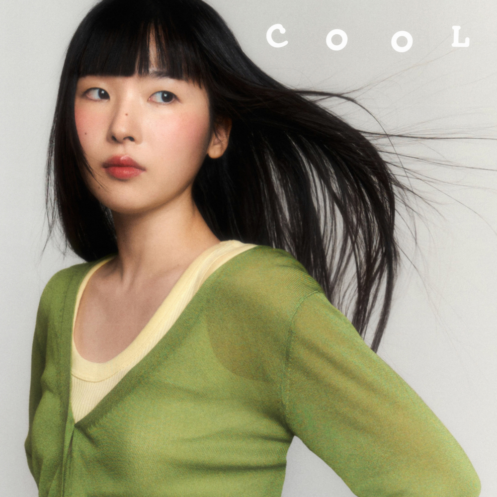

안녕하세요, 라보엠입니다.
오늘은 2025년 한국대중음악상 올해의 신인 후보에 오른 싱어송라이터 주혜린의 대표곡 ‘미친 건가’가 포함된 그녀의 앨범 cool을 소개해드리려 합니다. 첫 EP [COOL]의 타이틀곡인 ‘미친 건가’는 사랑에 빠진 순간의 천진난만함과 일상적인 대화의 친근함을 세련된 멜로디와 감각적인 가사로 풀어내며, 많은 팬들의 공감을 얻고 있습니다.

‘미친 건가’ – 사랑의 설렘과 일상의 대화
‘미친 건가’는 제목처럼, 사랑에 빠졌을 때 느끼는 혼란과 설렘, 그리고 그 감정이 일상 속 대화에 자연스럽게 스며드는 순간을 노래합니다. “자 밖으로 나가 널 만나러 가 / 날씨 너무 좋아 기분도 미친 건가”라는 도입부부터, 사랑에 빠진 사람이 느끼는 들뜬 기분이 고스란히 전해집니다. 연인과 함께라면 아무것도 하지 않아도 좋고, 오래된 연인이 되면 더할 나위 없이 행복할 것 같다는 소박한 바람이 담겨 있습니다.
특히, “응 그 노래 알지 / 너도 이 노래 좋아해? / 신기해 나돈데 / 너랑 말하는 게 너무 좋은 거야”와 같은 가사는 친구나 연인에게 무심코 건네는 일상적인 말을 음악으로 풀어내며, 듣는 이로 하여금 자신의 경험을 자연스레 떠올리게 만듭니다. 주혜린의 담백하면서도 온기가 느껴지는 목소리, 그리고 팝과 알앤비를 넘나드는 세련된 편곡이 어우러져 곡의 매력을 한층 끌어올립니다.
곡의 완성도와 음악적 특징
‘미친 건가’는 빠른 템포임에도 조급하지 않은 전개와, 통통 튀는 리듬, 그리고 담백한 보컬이 특징입니다. 반복되는 후렴구와 일상적인 소재의 가사는 곡을 더욱 친근하게 만들며, 평범한 사랑 이야기를 자기만의 문체로 산뜻하게 풀어내는 주혜린만의 개성이 돋보입니다. 동료 뮤지션들과의 협업으로 완성된 프로덕션 역시 신인답지 않은 안정감과 깊이를 보여줍니다.
2025년 한국대중음악상 ‘올해의 신인’ 후보
주혜린은 2025년 제22회 한국대중음악상에서 ‘올해의 신인’ 부문 후보에 올랐습니다. 이는 [COOL] 앨범 ‘미친 건가’가 동시대 알앤비 팝의 경향에서 벗어나, 자신만의 색깔과 문체로 음악성을 인정받았기 때문입니다. 선정위원들은 “평범한 사랑 이야기를 생활성 느껴지는 배경과 소재로 풀어내, 주류와 인디 신을 초월해 살아남은 훌륭한 선배들의 전례를 떠올리게 한다”며 주혜린의 음악적 성취를 높이 평가했습니다. 실제로, [COOL]은 좋은 조력자들과의 협업을 통해 주혜린만의 스타일과 감성을 완성도 높게 담아냈다는 평가를 받고 있습니다.
주혜린 — 한국대중음악상시상식
좋은 신인은 좋은 조력을 거쳐 탄생한다. 주혜린은 데뷔 EP의 아티스트 노트를 통해 동료들에게 고마움을 전했다. [COOL]은 실제로 주혜린의 솔로 작품이지만 연주, 편곡, 프로듀싱에 꾸준히 힘을
koreanmusicawards.com
음악 팬들의 반응과 앞으로의 기대
‘미친 건가’는 “친구나 연인에게 무턱대고 전화를 걸어 ‘뭐해?’로 시작하는 대화처럼 천진하고 친숙하다”는 평을 받으며, 많은 이들에게 일상 속 위로와 공감을 선사하고 있습니다. 세련된 멜로디와 고급스러운 가사, 그리고 자연스러운 감정선이 어우러진 이 곡은, 신인답지 않은 깊이와 세련미로 2025년 반드시 주목해야 할 곡으로 손꼽힙니다.
맺음말
주혜린의 ‘미친 건가’는 일상과 사랑의 감정을 담백하게 풀어내면서도, 세련된 음악적 완성도로 올해의 신인 후보에 오를 만한 충분한 이유를 보여줍니다. 소박한 대화 속 설렘과 진심이 음악으로 빛나는 이 곡을 통해, 주혜린이 앞으로 어떤 음악적 행보를 이어갈지 더욱 기대가 모아집니다. 2025년, 새로운 감성의 시작을 알리는 주혜린의 앨범 cool 을 꼭 한 번 들어보시길 추천합니다.